Aula 9:
Controle LQR
Prof. Marcos Rogério Fernandes
15 de outubro de 2026
Ciclo do Projeto de Controle LQR
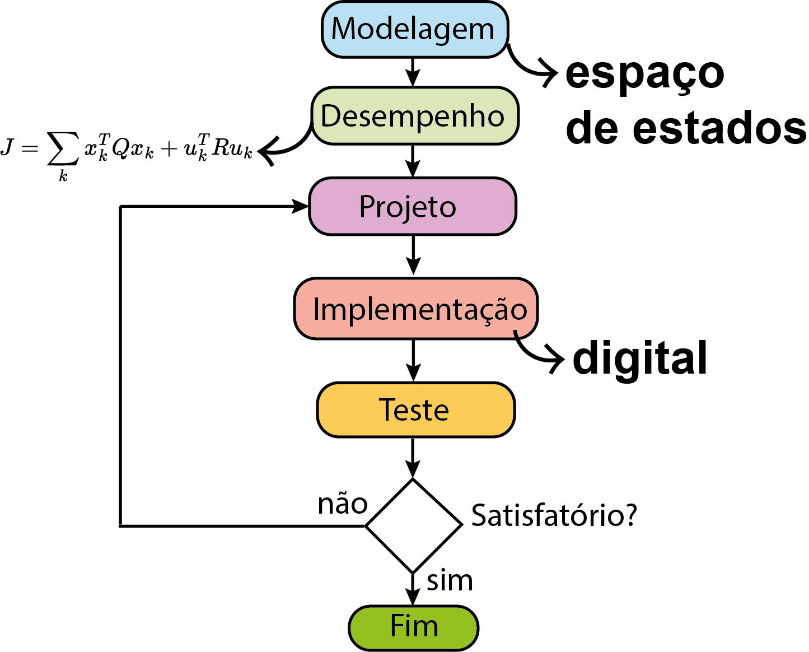
Objetivos
Os objetivos desta aula são entender:
- Problema de controle ótimo;
- Custo quadrático;
- Programação dinâmica: equação de Bellman;
- Equação de Riccati;
- Custo ótimo;
- Solução no MATLAB (
dlqr,idare).
Controle Ótimo
Objetivo: Obter uma sequência de ações de controle $\{u_k\}_{k=0}^{N-1}$ que minimize um critério de desempenho (função custo).
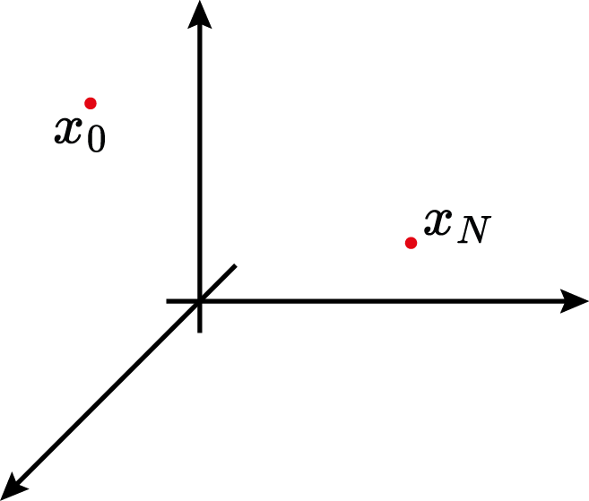
Controle Ótimo
Objetivo: Obter uma sequência de ações de controle $\{u_k\}_{k=0}^{N-1}$ que minimize um critério de desempenho (função custo).
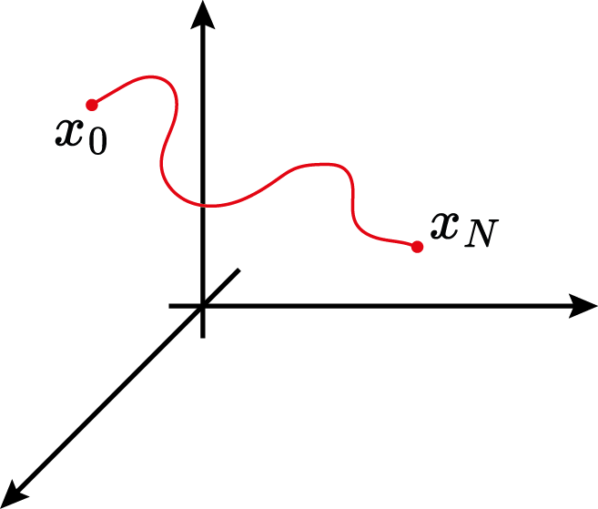
Controle Ótimo
Objetivo: Obter uma sequência de ações de controle $\{u_k\}_{k=0}^{N-1}$ que minimize um critério de desempenho (função custo).
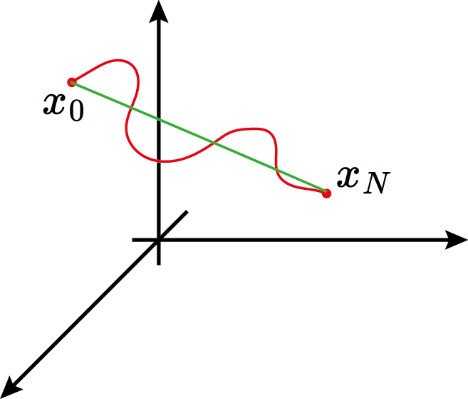
Controle Ótimo
Objetivo: Obter uma sequência de ações de controle $\{u_k\}_{k=0}^{N-1}$ que minimize um critério de desempenho (função custo).
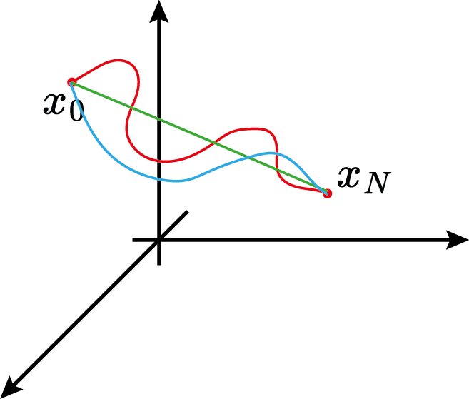
Cálculo Variacional: o Problema da Braquistócrona
Qual curva leva a bolinha de $A$ até $B$, partindo do repouso e sob ação da gravidade, no menor tempo? (Johann Bernoulli, 1696)
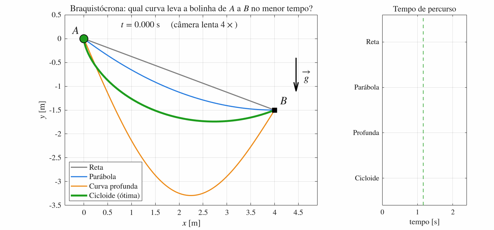
$$\min_{y(\cdot)}\; T=\int_A^B \frac{ds}{v}=\int_0^{x_B}\frac{\sqrt{1+y'(x)^2}}{\sqrt{2g\,|y(x)|}}\,dx \quad\Rightarrow\quad \text{solução ótima: cicloide}$$
Cálculo Variacional: o Problema da Braquistócrona
Controle Ótimo
Problema de programação (otimização) matemática: $$ \min_{u_0,u_1,\ldots,u_{N-1}} \quad J\\ \text{sujeito a} \\ x_{k+1}=f(x_k,u_k)\\ x_k\in\mathcal{X}\\ u_k\in\mathcal{U} $$
Controle LQR (Linear Quadratic Regulator)
$$ J_{0\to N}=x_N^\trp P_N x_N + \sum_{k=0}^{N-1} \left(x_k^\trp Qx_k+u_k^\trp Ru_k\right), \\Q=Q^\trp\succeq 0,\quad R=R^\trp \succ 0,\quad P_N=P_N^\trp\succeq 0 $$
Dinâmica Linear:$$ x_{k+1}=Ax_k+Bu_k\\ x_k\in\mathbb{R}^n\\ u_k\in\mathbb{R}^m $$
Custo Quadrático: Visualização 3D
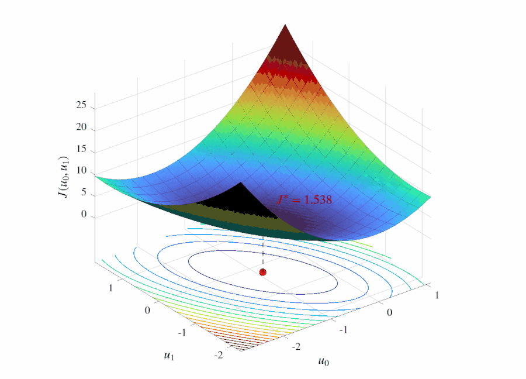
Controle Ótimo: LQR
Problema de programação (otimização) matemática: $$ \min_{u_0,u_1,\ldots,u_{N-1}} \quad \sum_{k=0}^{N-1} \left(x_k^\trp Qx_k+u_k^\trp Ru_k\right)+x_N^\trp P_N x_N \\ \text{sujeito a} \\ x_{k+1}=Ax_k+Bu_k\\ x_k\in\mathbb{R}^n\\ u_k\in\mathbb{R}^m $$
Princípio de Otimalidade de Bellman
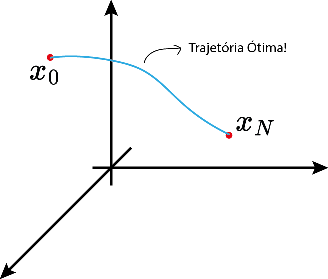
Princípio de Otimalidade de Bellman
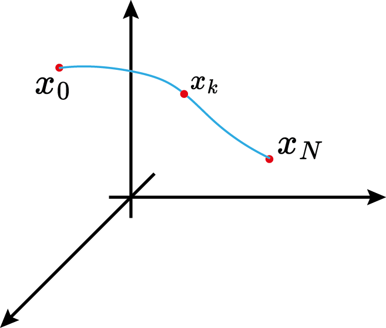
Princípio de Otimalidade de Bellman
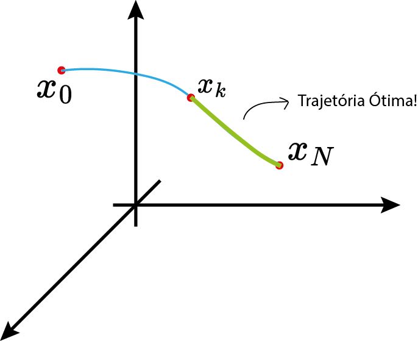
Princípio de Otimalidade de Bellman
Então, para qualquer $k\in \{0,1,\ldots,N-1\}$, tem-se: $\{x_k^*,x_{k+1}^*,\ldots,x_N^*\}$ e $\{u_k^*,u_{k+1}^*,\ldots,u_{N-1}^*\}$ são a trajetória ótima de estados e as ações ótimas de controle, respectivamente, que minimizam $J_{k\to N}$ a partir de $x_k^*$.
Equação de Bellman
$$ V_k(x_k)=\min_{u_k} [\underbrace{x_k^\trp Q x_k + u_k^\trp R u_k}_{\text{custo por estágio}} + \underbrace{V_{k+1}(x_{k+1})}_{\text{custo \textit{to-go}}}],\quad V_N(x_N)=x_N^\trp P_N x_N $$
Base da programação dinâmica! (aprendizado por reforço etc.)
Equação de Bellman
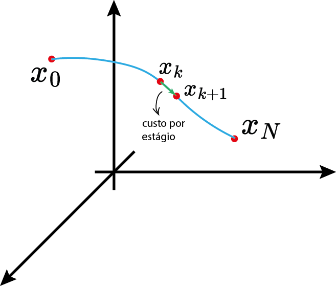
Equação de Bellman
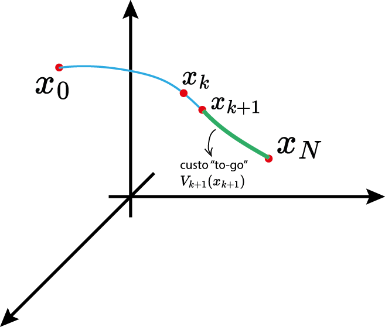
Equação de Bellman
$$ V_k(x_k)=\min_{u_k} [x_k^\trp Q x_k + u_k^\trp R u_k + V_{k+1}(x_{k+1})] $$
Hipótese:
$$ V_{k+1}(x_{k+1})=x_{k+1}^\trp P_{k+1}x_{k+1}, \quad P_{k+1}=P_{k+1}^\trp \succeq 0 $$Equação de Bellman
$$ V_k(x_k)=\min_{u_k} [\underbrace{x_k^\trp Q x_k + u_k^\trp R u_k + x_{k+1}^\trp P_{k+1}x_{k+1}}_{g(x_k,u_k)}] $$
LQR: custo quadrático + dinâmica linear geram um problema convexo! Como $R+B^\trp P_{k+1}B\succ 0$, $g$ é estritamente convexa em $u_k$ ⇒ mínimo único:
$$ \frac{\partial g(x_k,u_k)}{\partial u_k}=0 $$Propriedades de derivadas no $\mathbb{R}^n$
Propriedades de derivadas no $\mathbb{R}^n$
Propriedades de derivadas no $\mathbb{R}^n$
Propriedades de derivadas no $\mathbb{R}^n$
Propriedades de derivadas no $\mathbb{R}^n$
Propriedades de derivadas no $\mathbb{R}^n$
Propriedades de derivadas no $\mathbb{R}^n$
Solução de Controle Ótimo (LQR):
$$ u^*_k=-\underbrace{(R+B^\trp P_{k+1}B)^{-1}B^\trp P_{k+1}A}_{K_k}x_k $$
- Realimentação de estados!
- Ganho $K_k$ variante no tempo: depende de $P_{k+1}$.
Equação de Bellman
$$ V_k(x_k)=x_k^\trp Q x_k + (u_k^*)^\trp R u_k^* + x_{k+1}^\trp P_{k+1}x_{k+1}\\ x_{k+1}=Ax_k+Bu^*_k $$
Com $$ u^*_k=-\underbrace{(R+B^\trp P_{k+1}B)^{-1}B^\trp P_{k+1}A}_{K_k}x_k,\quad V_k(x_k)=x_k^\trp P_k x_k $$Equação Recursiva de Riccati
$$ x_k^\trp P_k x_k \\=x_k^\trp(Q +A^\trp P_{k+1}A-A^\trp P_{k+1}B(R+B^\trp P_{k+1}B)^{-1}B^\trp P_{k+1}A )x_k $$
Então,Equação de Riccati para tempo discreto: $$ P_k =Q +A^\trp P_{k+1}A-A^\trp P_{k+1}B(R+B^\trp P_{k+1}B)^{-1}B^\trp P_{k+1}A $$
Solução da Equação de Riccati
$$ P_{N-1} =Q +A^\trp P_{N}A-A^\trp P_{N}B(R+B^\trp P_{N}B)^{-1}B^\trp P_{N}A $$
Para $k=N-2$,$$ P_{N-2} =Q +A^\trp P_{N-1}A-A^\trp P_{N-1}B(R+B^\trp P_{N-1}B)^{-1}B^\trp P_{N-1}A $$
Para $k=N-3,\ldots, 1, 0$,$$ P_k =Q +A^\trp P_{k+1}A-A^\trp P_{k+1}B(R+B^\trp P_{k+1}B)^{-1}B^\trp P_{k+1}A $$
Exemplo
$$ x_{k+1}=\begin{bmatrix}3 & 0 \\ 5 & 4\end{bmatrix}x_k+\begin{bmatrix}1 \\ 2\end{bmatrix}u_k $$
Obtenha o controle ótimo LQR de horizonte finito com $N=20$ e $$ Q=\begin{bmatrix}2 & 0 \\ 0 & 3\end{bmatrix},\quad R=1,\quad P_N=0.1I $$Exemplo no Matlab: solução (horizonte finito)
A = [3 0; 5 4]; B = [1; 2];
Q = diag([2 3]); R = 1;
N = 20; P = 0.1*eye(2); % P_N
K = zeros(N,2); % K(k+1,:) = K_k
for k = N-1:-1:0 % recursão de Riccati para trás
K(k+1,:) = (R + B'*P*B) \ (B'*P*A); % K_k (usa P_{k+1})
P = Q + A'*P*A - A'*P*B*K(k+1,:); % P_k
end
K(N,:) % K_19 = [0.8667 0.5333]
K(1,:) % K_0 = [2.4845 1.9994]
x = [1; 1]; J = x'*P*x % custo ótimo J* = 49.81
for k = 1:N % simulação: u_k = -K_k x_k
u = -K(k,:)*x; x = A*x + B*u;
endRecursão para trás: $K_{19}=[0.867\;\;0.533]\;\to\;K_0\approx[2.484\;\;2.000]$ (o ganho converge rapidamente)
Exemplo no Matlab: solução (horizonte finito)
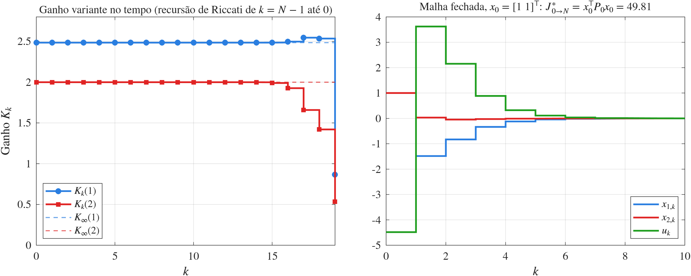
Longe do final do horizonte, $K_k\approx K_\infty$; o ganho só muda nos últimos passos, quando $P_N$ passa a pesar.
Controle LQR (Linear Quadratic Regulator)
$$ J_\infty = \lim_{N\to \infty} \left[\sum_{k=0}^{N-1} \left(x_k^\trp Qx_k+u_k^\trp Ru_k\right)+x_N^\trp P_N x_N\right], $$
com $$ Q=Q^\trp\succeq 0,\quad R=R^\trp \succ 0 $$Controle LQR (Linear Quadratic Regulator)
$$ J_\infty = \sum_{k=0}^{\infty} \left(x_k^\trp Qx_k+u_k^\trp Ru_k\right), $$
com $$ Q=Q^\trp\succeq 0,\quad R=R^\trp \succ 0 $$Controle LQR (Linear Quadratic Regulator)
$$ J_\infty = \sum_{k=0}^{\infty} \left(x_k^\trp Qx_k+u_k^\trp Ru_k+2x_k^\trp N u_k\right), $$
com $$ \begin{bmatrix}Q & N\\ N^\trp & R\end{bmatrix}\succeq 0,\quad R=R^\trp \succ 0 $$Termo cruzado $N$ (opcional; no MATLAB: dlqr(A,B,Q,R,N)). Neste curso: $N=0$.
Solução Estacionária da Eq. de Riccati
$$ P_\infty =Q +A^\trp P_\infty A-A^\trp P_\infty B(R+B^\trp P_\infty B)^{-1}B^\trp P_\infty A $$
Lei de Controle Ótimo: $$ u^*_k=-\underbrace{(R+B^\trp P_\infty B)^{-1}B^\trp P_\infty A}_{K}x_k $$
Exemplo
$$ x_{k+1}=\begin{bmatrix}3 & 0 \\ 5 & 4\end{bmatrix}x_k+\begin{bmatrix}1 \\ 2\end{bmatrix}u_k $$
Obtenha o controle ótimo LQR de horizonte infinito e $$ Q=\begin{bmatrix}2 & 0 \\ 0 & 3\end{bmatrix},\quad R=1 $$Exemplo no Matlab: solução (horizonte infinito)
A = [3 0; 5 4]; B = [1; 2];
Q = diag([2 3]); R = 1;
abs(eig(A)) % 3 e 4 -> malha aberta instável
rank(ctrb(A,B)) % 2 (det = 7) -> controlável
[P, K, polos] = idare(A, B, Q, R) % eq. algébrica de Riccati (DARE)
% P = [10.9384 -5.9402
% -5.9402 50.7537]
% K = [ 2.4845 1.9994]
% polos = 0.3216, 0.1952 (|z| < 1: estável)
[K2, P2] = dlqr(A, B, Q, R); % mesma solução (u_k = -K x_k)
x0 = [1; 1];
J = x0'*P*x0 % custo ótimo J* = 49.81$K_\infty=[2.4845\;\;1.9994]$: polos de malha fechada em $0.322$ e $0.195$
Exemplo no Matlab: solução (horizonte infinito)
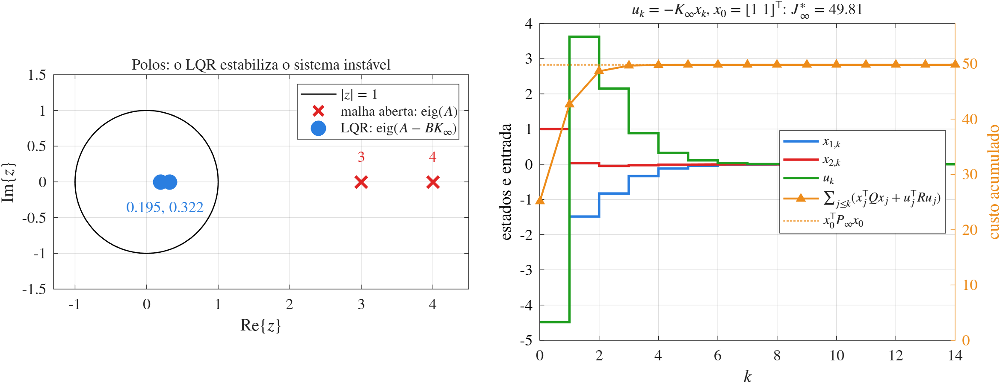
O custo acumulado simulado converge exatamente para $x_0^\trp P_\infty x_0=49.81$.
Solução Estacionária da Eq. de Riccati
$$ P_\infty =Q +A^\trp P_\infty A-A^\trp P_\infty B(R+B^\trp P_\infty B)^{-1}B^\trp P_\infty A $$
- Sob essas condições, o LQR garante estabilidade em malha fechada!
Controle LQR (Linear Quadratic Regulator)
Estabilidade implica $$ J_\infty = \lim_{N\to \infty} \left[\sum_{k=0}^{N-1} \left(x_k^\trp Qx_k+u_k^\trp Ru_k\right)+x_N^\trp P_N x_N\right] \lt \infty $$
com $$ Q=Q^\trp\succeq 0,\quad R=R^\trp \succ 0 $$Matrizes de desempenho $Q$ e $R$
$$ Q=\begin{bmatrix}q_{11}\\ & q_{22} \\ & & \ddots \\ & & & q_{nn}\end{bmatrix},\quad R=\begin{bmatrix}r_{11}\\ & r_{22} \\ & & \ddots \\ & & & r_{mm}\end{bmatrix} $$
com $$ q_{ii}=\frac{1}{(x_i^\text{max})^2},\quad r_{ii}=\frac{1}{(u_i^\text{max})^2} $$$x_i^\text{max}$, $u_i^\text{max}$: máximos desvios aceitáveis de cada estado e de cada entrada.
Controle LQR (Linear Quadratic Regulator)
$$ V_0(x_0) = \min_{\{u_k\}} J_\infty = \min_{\{u_k\}}\sum_{k=0}^{\infty} \left(x_k^\trp Qx_k+u_k^\trp Ru_k\right) = x_0^\trp P_\infty x_0 $$
com $$ Q=Q^\trp\succeq 0,\quad R=R^\trp \succ 0 $$Controle LQR (Linear Quadratic Regulator)
$$ J_\infty^* = x_0^\trp P_\infty x_0 $$

Pêndulo Invertido sobre Carro: LQR x PID
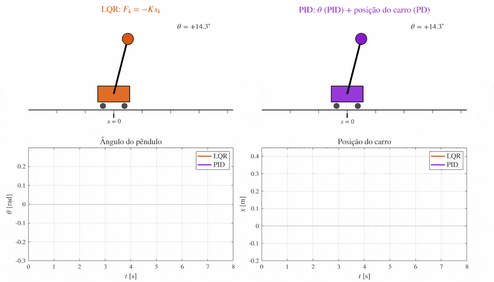
Próxima aula teórica
Filtro de Kalman